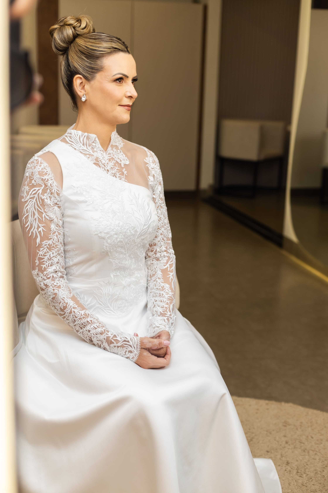
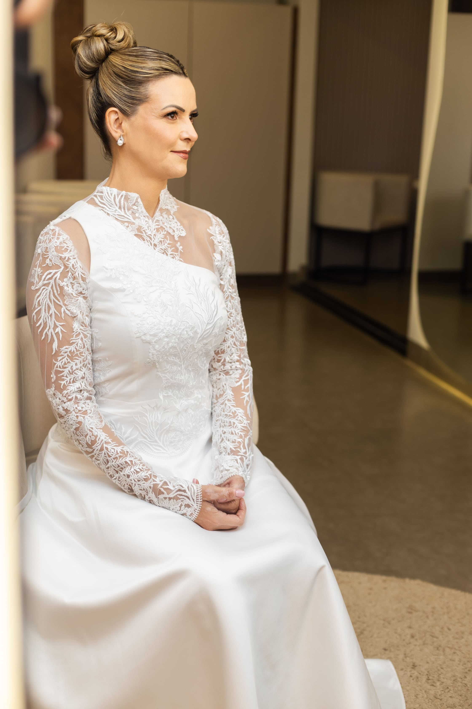
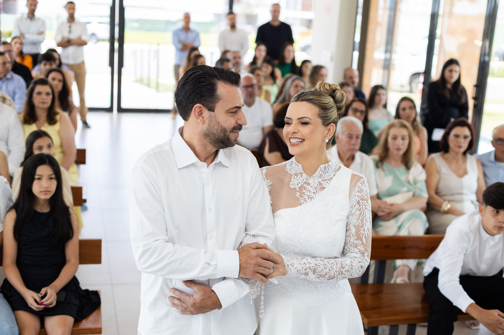

Vinte anos de união, três filhos maravilhosos e uma história de amor que se reinventa a cada dia. Foi com essa energia e gratidão que Alessandra e Márcio celebraram suas Bodas de Porcelana no Condomínio Forest Hill em Cianorte, no dia 01 de novembro de 2025. Uma data para ficar marcada na memória e no coração de todos que estiveram presentes.
Celebrar 20 anos de casados é um marco incrível. É olhar para trás e ver quantas conquistas, desafios dúvida, a presença dos três filhos do casal, frutos desse amor que cresceu e se multiplicou.
O dia começou com os preparativos da Alessandra, um momento de pura beleza e introspecção. No salão, a elegância e o brilho no olhar dela refletiam a alegria de reafirmar esse compromisso.
 



A cerimônia foi realizada no Condomínio Forest Hill, em Cianorte, com presença de amigos e familiares. A atmosfera era de pura emoção e alegria.
A beleza de uma renovação de votos está na reafirmação do compromisso. "Sim, eu escolheria você outra vez".


"Vinte anos se passaram, e o nosso amor apenas amadureceu, tornando-se mais forte e bonito a cada dia."

Registrar essa renovação foi um privilégio. Desejo ao casal Alessandra e Márcio que venham mais 20, 40, 60 anos de muito amor e cumplicidade!

Os três filhos participaram ativamente, tornando tudo ainda mais memorável. Ver a família completa, unida e celebrando o amor dos pais é algo que não tem preço.


Se você também vai celebrar suas bodas ou renovar seus votos e quer ter esses momentos eternizados com sensibilidade, entre em contato. Vamos contar a sua história!